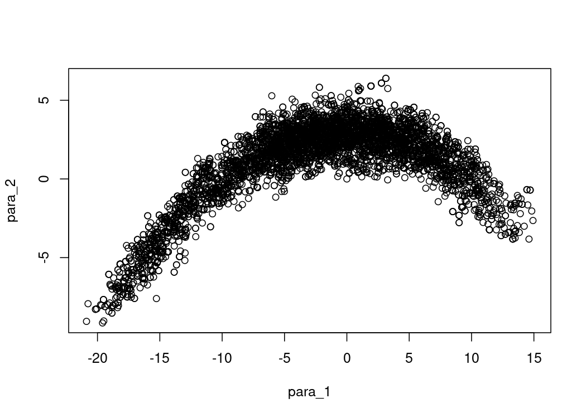
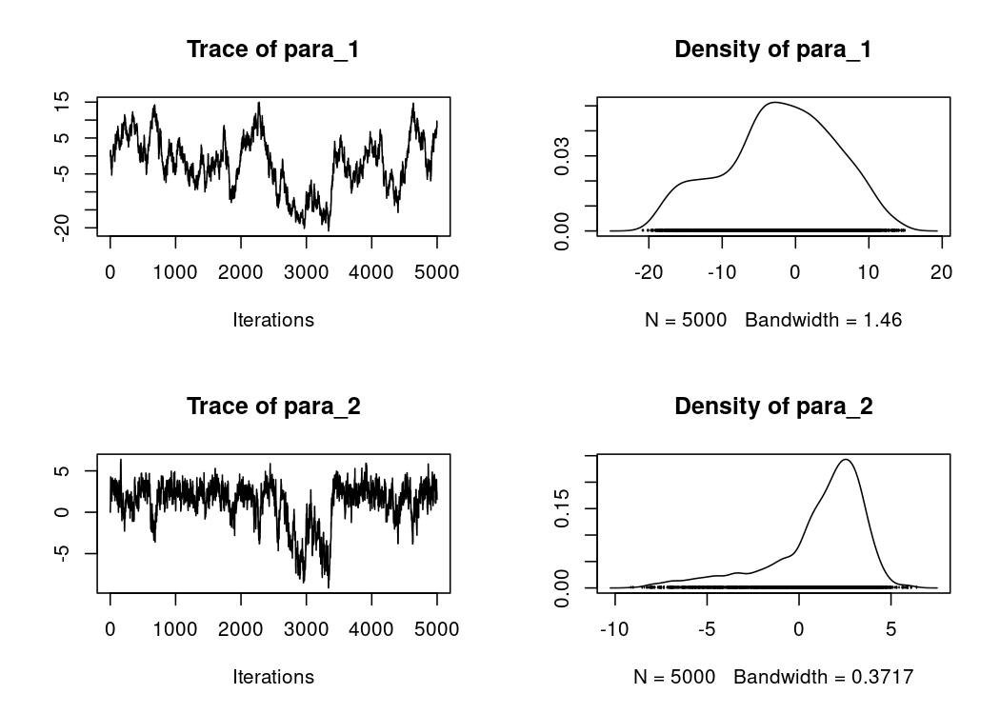

This package offers a very bare-bones interface to use the Metropolis-Hastings Monte Carlo Markov Chain algorithm. It is suitable for teaching and testing purposes. For more advanced uses, you can check out the mcmcensemble or adaptMCMC packages, which are designed with a very similar interface, but often allow better convergence, especially for badly scaled problems or highly correlated set of parameters.
Installation
You can install the development version from GitHub:
# install.packages("remotes")
remotes::install_github("Bisaloo/simpleMH")Example
library(simpleMH)
## a log-pdf to sample from
p.log <- function(x) {
B <- 0.03 # controls 'bananacity'
-x[1]^2/200 - 1/2*(x[2]+B*x[1]^2-100*B)^2
}
res <- simpleMH(
p.log,
inits = c(0, 0),
theta.cov = diag(2),
max.iter = 5000,
coda = TRUE # to be able to have nice plots and diagnostics with the coda pkg
)Here is the resulting sampling landscape of p.log():
plot(as.data.frame(res$samples))
We can then use the coda package to post-process the chain (burn-in, thinning, etc.), plot the trace and density, or compute convergence diagnostics:
plot(res$samples)